Low-latency AI for developer workflows
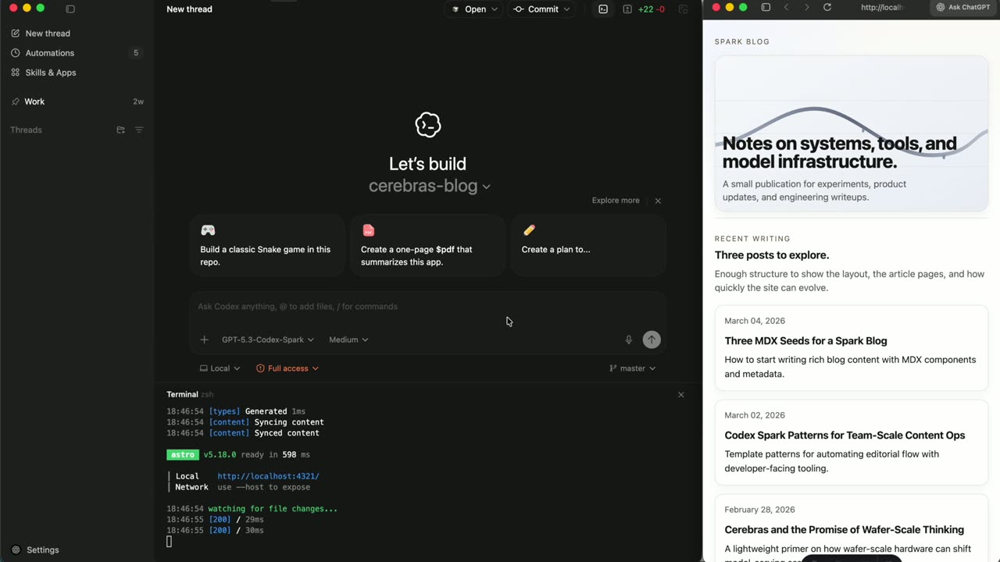
Chapters
Official description
Developer experience leaders from Cerebras and OpenAI show how low-latency inference changes coding agents, voice-driven workflows, slide generation, and workplace automation. See what you can build when responses land in seconds.
Summary
Overview
Developer experience leaders from Cerebras and OpenAI demonstrate how low-latency inference reshapes coding agents through Codex Spark, a lighter, faster version of Codex running on Cerebras Inference. The session argues that instant responses transform an AI model from an occasional query tool into always-running infrastructure for developer workflows.
Key announcements
- Codex Spark on Cerebras Inference (00:00:09
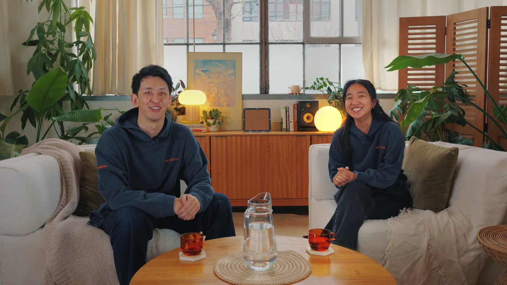
m05sp05s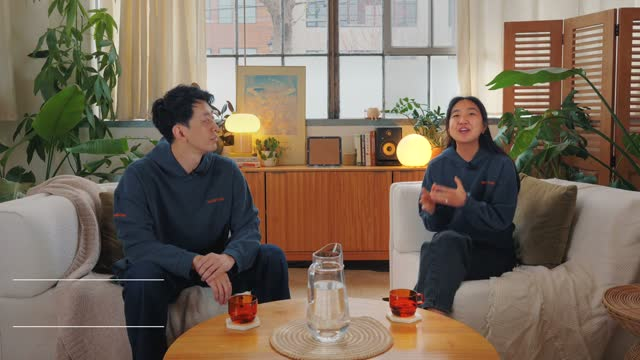
p10s) — A lighter, faster variant of Codex that delivers responses in seconds, positioned as a daily driver for interactive coding. - Multi-agent automation in Codex Spark (00:00:48
 m05s
m05s m10s
m10s p05s
p05s p10s) — A main agent can interpret a developer's daily goals and dispatch fast Spark sub-agents to read sources like Slack, Google Drive, and Google Meets.
p10s) — A main agent can interpret a developer's daily goals and dispatch fast Spark sub-agents to read sources like Slack, Google Drive, and Google Meets. - Roadmap toward smarter models (00:03:28
 m05s
m05s m10s
m10s p05s
p05s p10s) — The speakers state the current release is "v1" and that models on Cerebras will grow more intelligent, with future Spark versions absorbing tasks currently limited to full Codex.
p10s) — The speakers state the current release is "v1" and that models on Cerebras will grow more intelligent, with future Spark versions absorbing tasks currently limited to full Codex.
{kind=link}
{kind=link}
{kind=link}
Topics covered
- Workplace automation that summarizes Slack activity, product launches, and daily responsibilities.
- Open-source project maintenance: detecting duplicate issues, reviewing pull requests, pulling them down, fixing code, and pushing changes back.
- Real-time interactive coding against an application that hot-reloads as code changes.
- A live demo editing a homepage—adding a "See More" link with a blue, underline-free arrow to each cell, creating a featured blog section, and removing unwanted posts.
- The tradeoff between slower, smarter models and faster, more interactive ones, and how speed preserves a developer's flow state.
Notable quotes
"Once Spark landed, with the speed that Cerebras gives you, it's become my daily driver." — Jason Liu
"Once you have a model that responds instantly, you stop thinking of it as a tool you occasionally query and start thinking of it as infrastructure that's always running." — Sarah Chieng
"The slower, smarter models, full Codex, is like a bus for the mind. You can get on, fall asleep, wake up, and you're there. It did all the work. Spark is like a fast car." — Jason Liu
Products and tools mentioned
- Codex Spark
- Codex
- Cerebras Inference
- Slack
- Google Drive
- Google Meet
Speakers featured
- Jason Liu — OpenAI
- Sarah Chieng — Cerebras
Frames
{kind=link}
{kind=link}
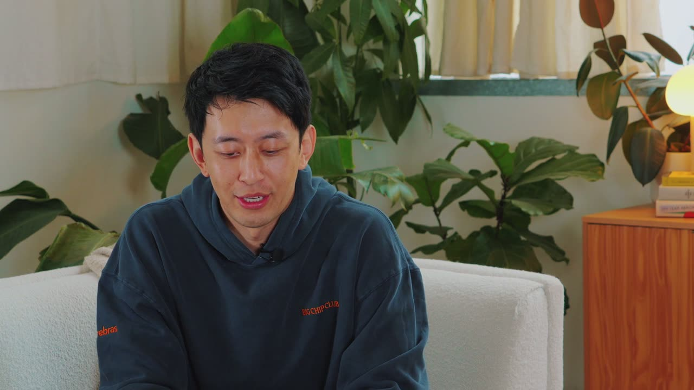
{kind=link}
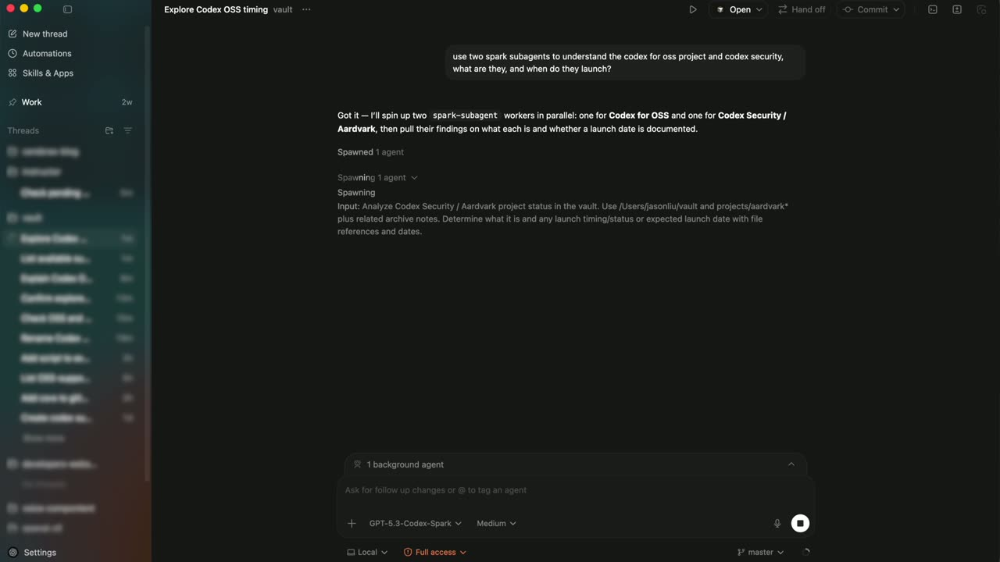
{kind=link}
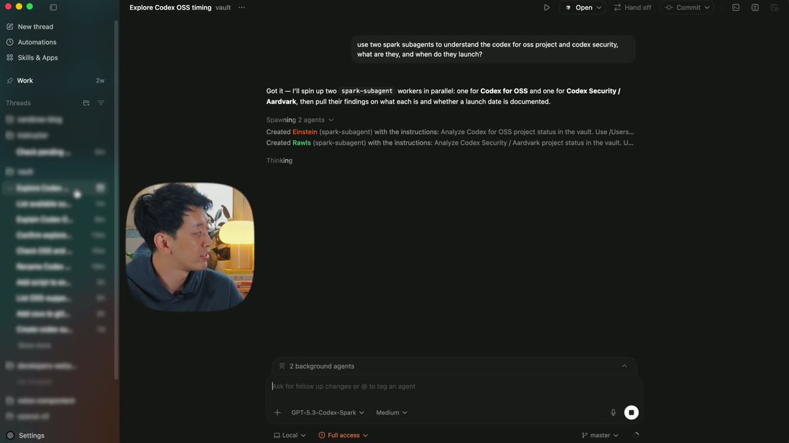
{kind=link}
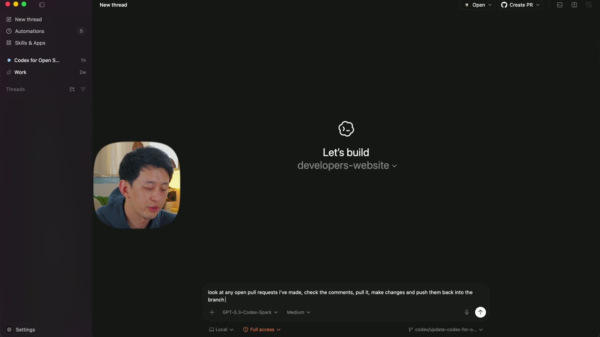
{kind=link}
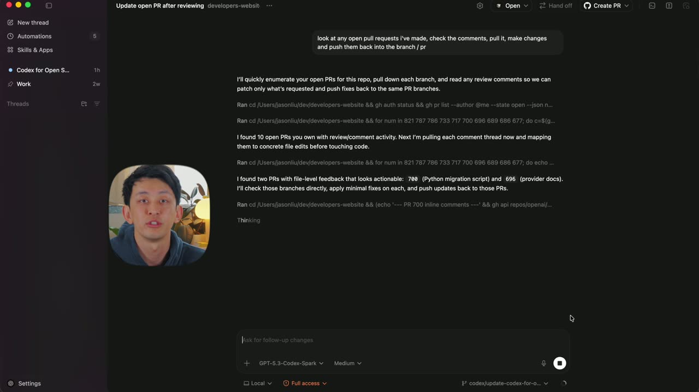
{kind=link}
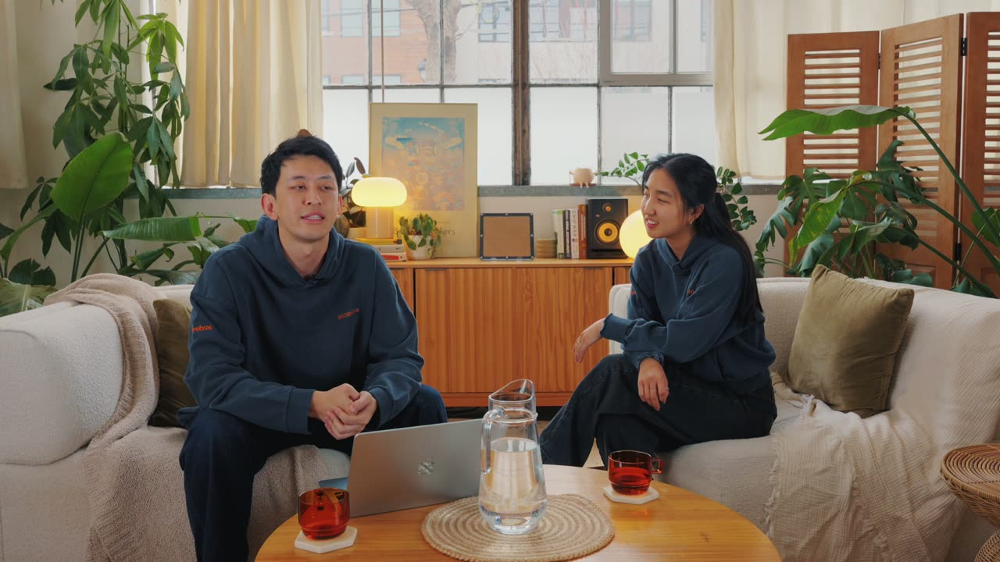
{kind=link}
{kind=link}
{kind=link}
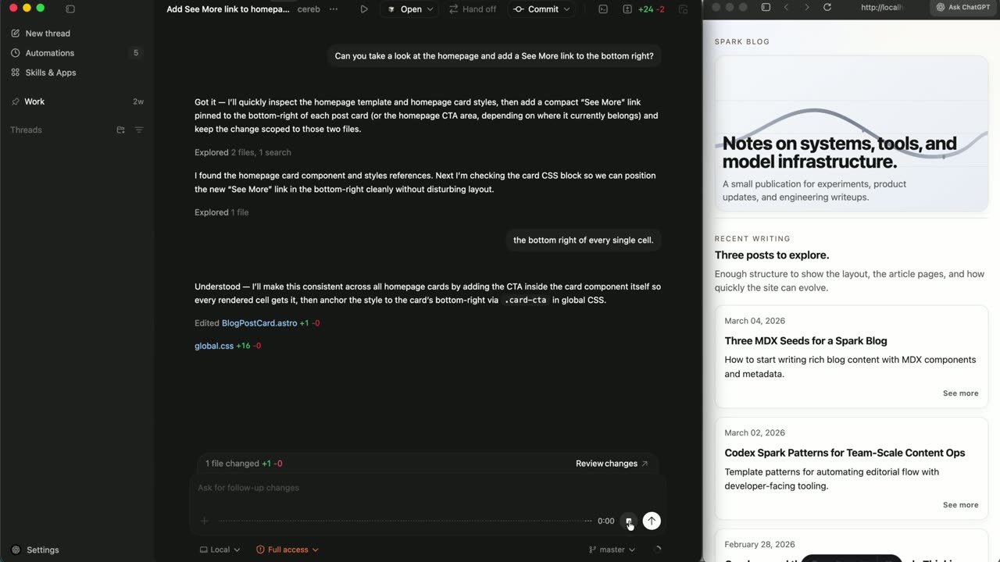
{kind=link}
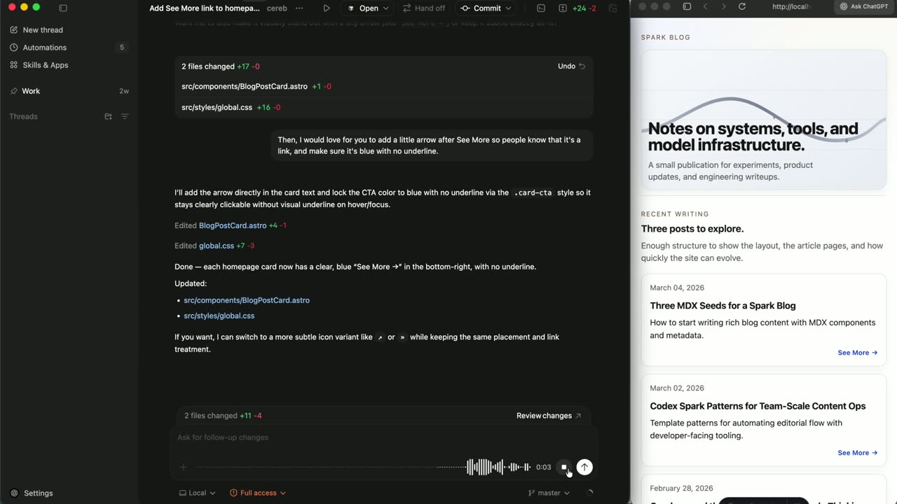
{kind=link}
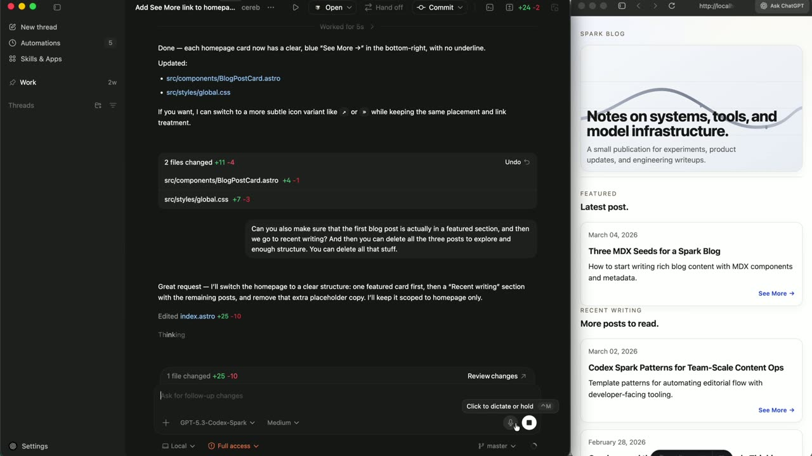
{kind=link}
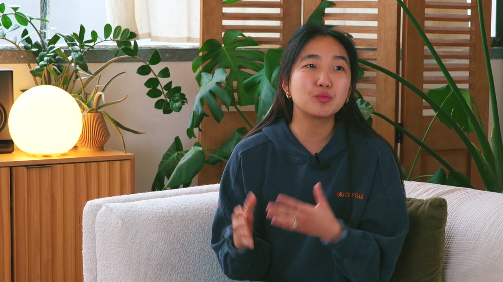
{kind=link}
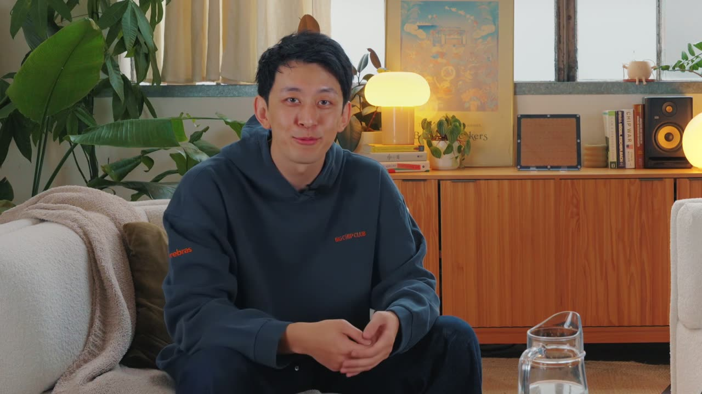
{kind=link}
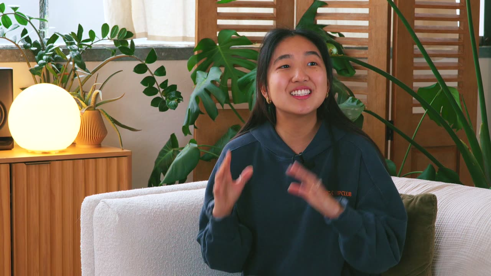
Transcript
Show / hide transcript (5,446 chars)
[00:00:00] JASON LIU: Once Spark landed, with the speed [00:00:01] that Cerebras gives you, it's become my daily driver. [00:00:05] SARAH CHIENG: It feels like an infomercial. [00:00:09] Codex Spark is a lighter, faster version of Codex running [00:00:12] on Cerebras Inference. [00:00:13] JASON LIU: Our models [00:00:14] on Cerebras are going to get smarter. [00:00:15] The speed is already there, and the intelligence is catching up. [00:00:18] SARAH CHIENG: Today, we want to show you how [00:00:19] to actually take advantage of that speed with some demos [00:00:22] that you can build yourself in the app. [00:00:23] JASON LIU: Great. [00:00:24] let's get into it. [00:00:24] So the first automation I made when I just joined OpenAI was [00:00:29] to just understand what's going on in Slack. [00:00:31] And so we've built some automations here [00:00:33] that basically checks upon Slack, figures out what kind [00:00:36] of topics are happening, [00:00:37] what kind of product launches are arriving, [00:00:39] to tell me what's going on. [00:00:40] Obviously, we can turn this to, you know, every day, [00:00:42] but with Codex Spark, these tasks run incredibly fast. [00:00:46] One of the great things about Codex Spark is [00:00:48] that we can define multi-agents. [00:00:50] And so, maybe the main agent is responsible [00:00:52] for understanding what my goals are for the day. [00:00:55] It can kick off sub-agents that are fast Spark agents [00:00:57] to read all of Slack or Google Drive or Google Meets, [00:01:01] and really help me understand what's going [00:01:02] on within the company and what my responsibilities are. [00:01:04] SARAH CHIENG: No, this is super cool. [00:01:05] I love it. [00:01:06] JASON LIU: The second automation I use is [00:01:07] for my open-source projects. [00:01:09] So, for one of my libraries, what I do now is every day, [00:01:12] I actually run a job that just checks [00:01:14] for any open pull requests and any issues. [00:01:16] Spark can help us figure out what are the duplicate issues, [00:01:19] whether or not projects are in the pipeline. [00:01:21] And then for any pull requests, it'll actually pull them down, [00:01:24] review the code, look at the comments, and just fix them [00:01:27] and push them back up. [00:01:28] That way, anything that I'm working [00:01:29] on is already fully tested. [00:01:31] And for the third example, [00:01:32] a place where Spark really shines is in interactive coding. [00:01:35] Oftentimes, when I know what I want to do and I use Codex, [00:01:38] tasks might take five or 10 minutes. [00:01:41] This takes me out of the flow state. [00:01:42] The joy of using Spark is [00:01:44] that things are incredibly interactive. [00:01:45] Now, let's jump in and see an example [00:01:46] of how interactive Spark can be. [00:01:48] One of the benefits of using a model that is so fast is [00:01:51] that when you're building on an application that reloads [00:01:53] when the code changes, oftentimes you can build [00:01:56] in a pretty real-time way. [00:01:57] Let's take a look at an example. [00:02:03] Can you take a look at the homepage and add a [00:02:04] "See More" link to the bottom right? [00:02:14] The bottom right of every single cell. [00:02:20] Then I would love for you to add a little arrow after "See More" [00:02:23] so people know that it is a link. [00:02:24] Make sure it's blue with no underline. [00:02:32] Can you also make sure that the first blog post is actually a [00:02:34] featured section, and then we go to recent writing? [00:02:38] And then can you delete all of the three posts to explore [00:02:41] and enough structure, all that stuff? [00:02:42] You can delete all that stuff. [00:02:54] That's perfect. [00:02:55] SARAH CHIENG: Speed is a major unlock. [00:02:57] Those were just a few ways to take advantage [00:02:59] of Spark inside the Codex app, but there are dozens more. [00:03:02] The point is, once you have a model that responds instantly, [00:03:05] you stop thinking of it as a tool you occasionally query [00:03:07] and start thinking of it [00:03:08] as infrastructure that's always running. [00:03:10] JASON LIU: Here's what I think about it. [00:03:11] The slower, smarter models, full Codex, [00:03:13] is like a bus for the mind. [00:03:15] You can get on, fall asleep, wake up, and you're there. [00:03:18] It did all the work. [00:03:19] Spark is like a fast car. [00:03:20] You might have to pay attention to the road, [00:03:22] but you can get there way faster if you know what you're doing. [00:03:24] But here's the thing I want developers to understand. [00:03:27] This is just v1. [00:03:28] Our models on Cerebras are going to get smarter. [00:03:30] SARAH CHIENG: Which means the tasks [00:03:31] that are Codex-only today might be Spark tomorrow. [00:03:34] So learn the tools now, because when Spark v2, v3 land -- [00:03:37] JASON LIU: You're going to want to know how to use them. [00:03:39] [ Music ]